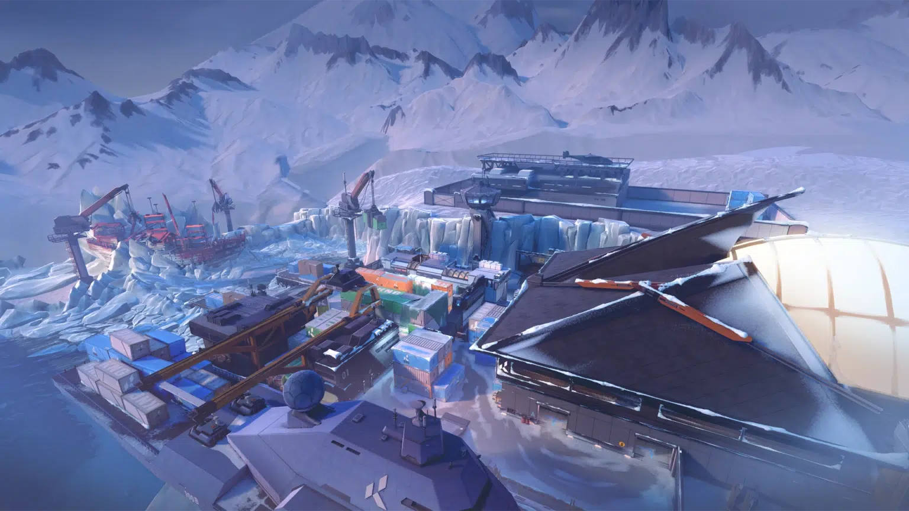

| Home | Article | Info | VCT | Gallery | Contact Us |
|---|
GALLERY |

|
Valorant map kini memiliki tujuh peta yang memiliki tema dan karakter wilayah yang berbeda. Game ini menyediakan map dengan mengambil nuansa tempat-tempat berkesan yang ada di dunia nyata. Permainan ini dibuat dan dikembangkan oleh perusahaan sekaligus penerbit game terkenal asal Amerika Serikat, yaitu Riot Games. Perusahaan asal Los Angeles ini selalu membuat event kompetisi esports berskala internasional atau dunia, salah satunya game Valorant. Valorant sedang hype dan digandrungi oleh para gamer karena menyajikan game dengan sistem FPS berjenis tactical shooter yang dilakukan oleh dua tim berlawanan. Game ini mengingatkan permainan Point Blank. Karena sistem permainan dilakukan dengan tim penjaga dan tim penjahat. Yang membedakan adalah kualitas grafis di dalam permainan dan variasi serangan serta tersemat skill-skill menarik di dalamnya. Selain itu, setiap tim hanya diisi oleh 5 orang saja dengan roleplay yang berbeda-beda pula. Orang atau karakter di dalam game online ini dikenal dengan sebutan ‘Agent’. Berikut adalah Valorant map names. |
| Ascent | Bind | Breeze |
|---|---|---|

|

|

|
| Ascent dianggap sebagai map favorit fans Valorant dengan desain aroma Venesia-Italia. Layout dan garis pandang yang khas membuatnya disukai para pemain yang gemar terlibat dalam pertempuran jarak jauh maupun jarak dekat. | Bind menjadi menonjol dalam Valorant karena teleporternya yang khas, sebuah fitur yang tidak dapat ditemukan di map lainnya. Teleporter ini memberikan pemain kemampuan untuk menavigasi medan tempur, menuntut kewaspadaan dan adaptabilitas yang konstan dengan cepat. Pemain yang sedang beraksi di map ini harus waspada setiap saat karena selalu terjadi kemungkinan pergeseran yang tidka terduga. | Breeze adalah map Valorant dengan tema pantai. Dengan layout yang luas dan garis pandang jarak jauh, Breeze menguji kemampuan pertempuran jarak jauh para pemain sambil menavigasi ruang terbuka. |
| Fracture | Haven | Icebox |

|

|
 |
| Tempat ini memiliki kisah sebagai laboratorium untuk riset-riset rahasia dan berbahaya. Para peneliti tersebut mengalami sebuah kegagalan dalam riset eksperimen radianite yang memantik ledakan dan hancurnya fasilitas lab. | Haven memiliki tiga site spike yang membedakannya dari map-map Valorant lainnya. Layout ini sangat menantang pemain untuk selalu mendesain ulang strategi. Map ini menciptakan lingkungan yang cocok untuk kreativitas taktis dan inovasi dalam bermain. | Icebox merupakan wilayah milik KNG Shipping Co., sebuah perusahaan yang bergerak di bidang penggalian logam-logam rahasia di daerah Arktik. Lokasi ini memiliki fitur Zipline untuk menghubungkan daerah satu sama lain. |
| Lotus | Pearl | Split |

|

|

|
| Lotus adalah map tiga site kedua di Valorant. Dia memperkenalkan fitur unik yang menghasilkan setting menarik. Map ini juga memiliki pintu berputar di sisia A dan C, serta dinding yang dapat dihancurkan antara A Main dan A Link, sehingga menghadirkan sejumlah pilihan strategi dan tantangan untuk dikuasai oleh pemain. | Pearl adalah peta tiga jalur dua situs. Menyusul peluncuran peta yang lebih kompleks secara strategis seperti Icebox, Breeze, dan Fracture, Pearl dirancang sebagai peta yang lebih tradisional. Hasilnya, Pearl adalah peta pertama yang dirilis yang tidak mengandung elemen dinamis atau kaitan mekanis apa pun untuk gameplay. | Map Split memiliki fitur yang khas karena medannya yang rumit, ditandai oleh struktur multi-level dan lorong-lorang sempit yang menawarkan pengalaman taktis berbeda. Pemain dipaksa beradaptasi terhadap tantangan dalam menavigasi posisi yang tinggi dan di level ground, sehingga menciptakan pertempuran yang sengit. |